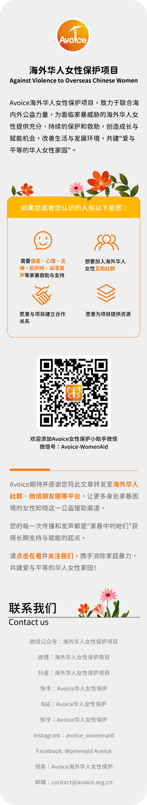

以下文章来源于CineAsia ，作者CineAsia
国际电影厂牌Trinity CineAsia电影，专注引领优质亚洲电影发行和讨论。


你是我的春天 ✦
Ode To The Spring
✦
VOL.1
🌷
购票开启啦！
由Trinity CineAsia在英发行，1905影业联合发行的《你是我的春天》将与国内同档上映，7月8日登陆全英！
点击下方图片查看影片上映城市和影院，以及购票二维码哦！
了解更多影片信息，请查看：《你是我的春天》英国定档！7月8日全英上映
✦
VOL.2
🌷
中英电影产业论坛暨映后见面会
为了让英国的观众更加近距离地了解本片，由CineAsia携手1905影业及伦敦大学金史密斯学院中国学联共同举办的中英电影产业线上论坛暨《你是我的春天》映后见面会将于7月17日在金史密斯学院内举办，届时将在zoom平台 同步直播，欢迎大家前往线下会场或者线上参与。
本次论坛将：
分享《你是我的春天》制作背后的故事 延伸到中国电影产业的现状（后疫情时代）的讨论 并分享作为青年电影人是如何逐步参与到电影产业中
✦ 解锁更多详细信息
•时间: 7月17日 | 英国时间 13:30-15:30 (北京时间 20:30-22:30)
•论坛形式: 线上zoom直播+线下会场同步进行
•线下会场: Goldsmiths, University of London
•出席嘉宾:
Chris Berry | KCL电影研究教授
周楠 |《你是我的春天》、《我的巴比伦恋人》导演
袁媛 |《你是我的春天》、《滚蛋吧，肿瘤君》编剧
阿郎｜著名影评人、《看电影》杂志主编
✦ 请关注CineAsia官方微信公众号及微博，私信我们，凭借《你是我的春天》电影票根或购票凭证获取参与资格。
✦
VOL.3
🌷
春日鲜花礼
影片原定4月初春上映，但却受疫情影响而延期至今。春日虽迟，相逢终有时。为了让大家跟随电影一起感受春日美好，CineAsia联手英国日出茶太Chatime送出“春日鲜花礼”。凭借《你是我的春天》影票票根或订票凭证前往Chatime Piccadilly Circus店即可领取鲜花并享受饮品8折福利。店中的花墙正在等待你来打卡！
相信生活也一定会对每个用心守护它的人报之以芳馨，所以那些还未实现的心愿，不如就从现在开始，与那个陪你一起走过春天的人约定 ——看看晴空，看看绿地，7月8日带上鲜花，一起在影院里再看一场盛大的“春天”吧！


